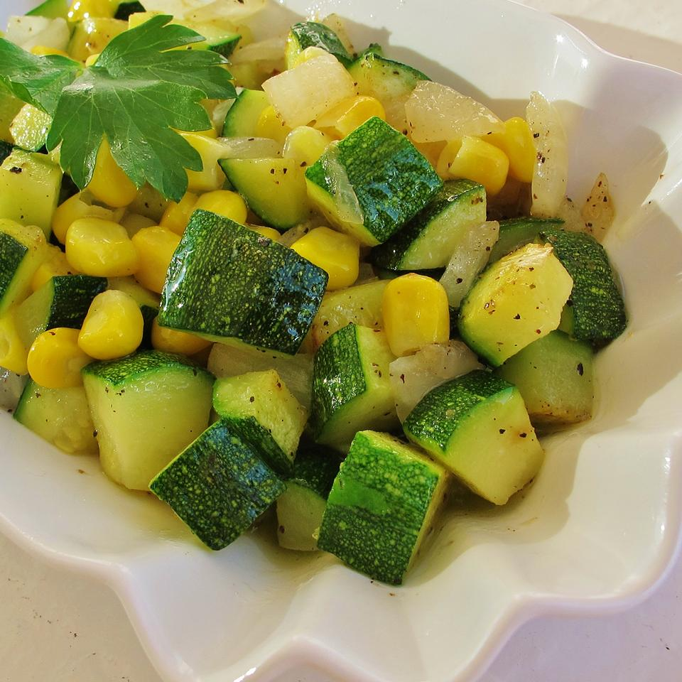

Salad

Ingredients
- ¼ cup butter
- ½ small white onion, finely diced
- 3 small zucchinis, diced
- 3 ears corn, husks and silk removed
- sea salt to taste
- freshly ground black pepper to taste
Directions
- Heat butter in a skillet over medium heat, stirring occasionally, until lightly browned, 1 to 2 minutes. Cook and stir onion in the melted butter until translucent, about 5 minutes. Cut kernels from the ears of corn. Add zucchini and corn; cook and stir until zucchini is tender, about 8 minutes. Season with sea salt and pepper.
Return